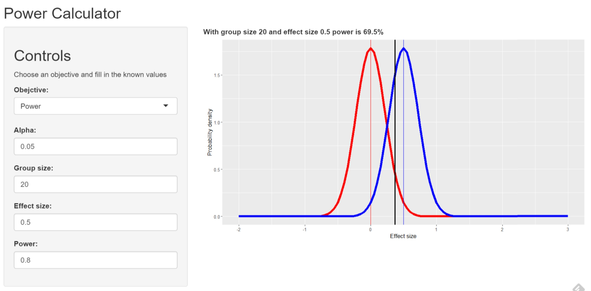

Power to the People
A friendly tool for power calculations
Phil Allen
Power is hard
- Often, study designers hope to see an effect
- Thinking about not finding it is unntuitive
- Can lead to wasted studies
- Usually, people need to work backwards from a conventional power (80%)
Make it easier
- Concentrate on key use cases ("objectives"):
- Find the group size you need to achieve a given power supposing an effect size
- Find the effect size you can detect at a given power with a given group size
- Find the power you have supposing an effect size for a given group size
- Present delta as effect size so that interface is unit-free
- Provide a visualisation alongside the calculation
Simple visualisation
- Thanks to Brian Caffo
++ Null hypothesis curve in red
++ Alternative hypothesis curve in blue
- Visualisation actually shows Z-test, but calculate results from power.t.test
- Effect size (x-axis) 0.5, and group size 20, with alpha 0.05
How it looks
Try it at shinyapps.io

Enhancements backlog
- Conditional hiding of input controls depending on objective
++ Using customer HTML
- Support other forms of test besides 1-sided, 1-sample
- Turn alpha, power inputs into percentages